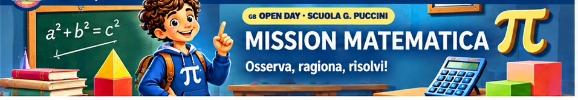
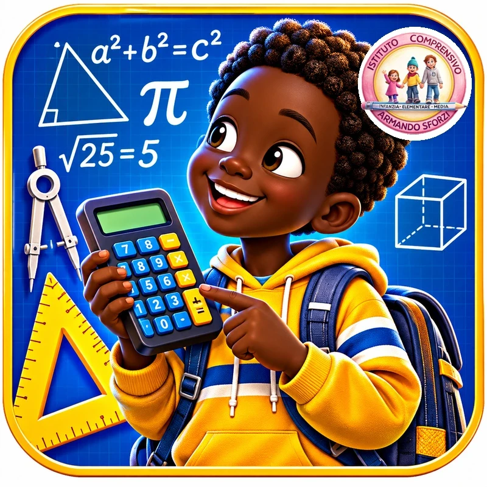

<!doctype html><html lang="it"><meta charset="utf-8"><meta name="viewport" content="width=device-width,initial-scale=1"><title>La Bilancia Magica | Missione Puccini</title><style>
*{box-sizing:border-box}body{margin:0;background:#e8f4f6;color:#123052;font: bold 18px Arial,sans-serif}header,footer{background:#123f73;color:white;padding:12px;text-align:center;border-bottom:3px solid #ffc63c}header a{color:white}main{max-width:1450px;margin:auto;padding:12px}button,input{font:inherit}button{cursor:pointer;border:2px solid #d59a21;border-radius:16px;background:linear-gradient(#fff,#ffe6a5);color:#123052;padding:10px;min-height:44px;box-shadow:0 3px #a46b14}button:disabled{opacity:.5;cursor:default}button:focus-visible{outline:4px solid #55bfff}button.active{background:#7529b9;color:white}h1{margin:8px auto;background:linear-gradient(#bd42ef,#6b16a4);color:white;border:4px solid #ffc844;border-radius:22px;text-align:center;padding:12px;font-size:2em;text-shadow:0 3px #4c116d}.banner{width:100%;border-radius:16px;display:block}.toolbar,.palette,.actions{display:flex;flex-wrap:wrap;justify-content:center;gap:10px;margin:12px 0}.scene{display:grid;grid-template-columns: minmax(100px,1fr) minmax(0,4fr) minmax(140px,1.35fr);gap:10px;align-items:end;background:radial-gradient(ellipse at center,#287e85,#123e53);border:5px solid #e6a735;border-radius:24px;padding:12px;box-shadow:inset 0 0 25px #092f42}.character{width:100%;border-radius:20px;align-self:end}.side{display:grid;gap:10px}.task{background:#fff5d5;border:3px solid #f4b52a;border-radius:18px;padding:14px;line-height:1.45}.eq{background:#fff;border:4px solid #ffc844;border-radius:18px;text-align:center;padding:8px;font-size:1.5em;overflow-wrap:anywhere}.stage{min-width:0}.stage svg{width:100%;display:block;touch-action:none}.status{text-align:center;color:white;min-height:1.4em}.palette button{touch-action:none;cursor:grab;min-width:95px}.palette img{width:76px;height:76px;object-fit:contain;display:block;margin:auto;pointer-events:none}.actions button:last-child{background:linear-gradient(#5cdb43,#14832b);color:white}.feedback{text-align:center;min-height:1.5em}.controls{display:flex;flex-wrap:wrap;gap:8px;justify-content:center}.controls button{padding:5px}details{text-align:center}#guess{width:90px;padding:8px}#reward{text-align:center;background:#d9f9cc;border-radius:18px;padding:20px} [hidden]{display:none!important}@media(max-width:850px){.scene{grid-template-columns:1fr 3fr}.side{grid-column:1/-1;grid-template-columns:1fr 100px}.character{max-height:230px;object-fit:contain}}@media(max-width:480px){.scene{grid-template-columns:1fr}.scene>.character{display:none}.side{grid-column:auto}.palette img{width:52px;height:52px}.palette button{min-width:75px}h1{font-size:1.5em}}@media(prefers-reduced-motion:no-preference){#beam{transition:transform .18s}}
</style><header><a href="../index.html">← Tutti i laboratori</a> · I.C. Armando Sforzi · Scuola Media G. Puccini<br>Prof. Marco Cigolotti · Creato con il supporto di AI</header><main><h1>⭐ La Bilancia Magica ⭐</h1><div class="toolbar" id="levels"><button data-l="0">1 · Esploratore</button><button data-l="1">2 · Detective</button><button data-l="2">3 · Maestro</button></div><div class="toolbar"><button id="free">Esplora liberamente</button><button id="play">Affronta la missione</button><button id="voice">🔊 Ascolta</button><button id="sound">Suoni: sì</button><button id="small">A−</button><button id="big">A+</button></div><div class="scene"><div class="stage"><div id="eq" class="eq"></div><svg id="svg" viewBox="0 0 640 365" aria-label="Bilancia interattiva"><defs><linearGradient id="gold" x1="0" y1="0" x2="1" y2=".5"><stop stop-color="#a65b00"/><stop offset=".22" stop-color="#ffb900"/><stop offset=".43" stop-color="#fff5a2"/><stop offset=".65" stop-color="#ffc21d"/><stop offset="1" stop-color="#a75a00"/></linearGradient><linearGradient id="wood" x2="0" y2="1"><stop stop-color="#e8b47b"/><stop offset="1" stop-color="#86421e"/></linearGradient></defs><g opacity=".25" fill="white" font-size="25"><text x="20" y="35">π</text><text x="500" y="40">a + b = ?</text><path d="M30 90L60 45L90 90Z" fill="none" stroke="white" stroke-width="3"/></g><rect x="0" y="310" width="640" height="55" rx="8" fill="url(#wood)"/><ellipse cx="320" cy="326" rx="110" ry="14" fill="#572c16" opacity=".5"/><path d="M305 90Q312 190 298 255Q290 280 266 300H374Q350 280 342 255Q328 190 335 90Z" fill="url(#gold)" stroke="#a65b00" stroke-width="3"/><ellipse cx="320" cy="253" rx="30" ry="12" fill="url(#gold)"/><rect x="240" y="298" width="160" height="26" rx="13" fill="url(#gold)" stroke="#9b5700" stroke-width="3"/><g id="beam"><path d="M120 85Q320 125 520 85L520 101Q320 150 120 101Z" fill="url(#gold)" stroke="#a65b00" stroke-width="3"/><g id="pan0"><path d="M120 93L25 245M120 93L215 245" stroke="#ffd77a" stroke-width="4"/><ellipse cx="120" cy="245" rx="100" ry="12" fill="#fff1a3" stroke="#c78915" stroke-width="3"/><path d="M20 245Q120 328 220 245Q120 270 20 245Z" fill="url(#gold)" stroke="#b47300" stroke-width="3"/><g id="items0"/></g><g id="pan1"><path d="M520 93L425 245M520 93L615 245" stroke="#ffd77a" stroke-width="4"/><ellipse cx="520" cy="245" rx="100" ry="12" fill="#fff1a3" stroke="#c78915" stroke-width="3"/><path d="M420 245Q520 328 620 245Q520 270 420 245Z" fill="url(#gold)" stroke="#b47300" stroke-width="3"/><g id="items1"/></g></g><circle cx="320" cy="93" r="29" fill="url(#gold)" stroke="#a65b00" stroke-width="4"/><text x="320" y="105" font-size="32" text-anchor="middle" fill="#fff4a0">★</text></svg><div class="status" id="status" aria-live="polite"></div></div><div class="side"><div class="task" id="task"></div></div></div><p style="text-align:center">Trascina gli oggetti sui piatti o fuori dalla bilancia.</p><div class="palette" id="palette"></div><div id="answer" hidden style="text-align:center"><label for="guess">Valore misterioso: </label><input id="guess" type="number" min="1" max="12"></div><div class="actions"><button id="both" hidden>Togli un oggetto uguale da entrambi</button><button id="hint" hidden>💡 Suggerimento</button><button id="reset">↻ Ricomincia</button><button id="check" hidden>Verifica</button><button id="next" hidden>Continua →</button></div><div class="feedback" id="feedback" role="status"></div><div id="reward" hidden>🏅 Missione completata! Mostra questa schermata al tutor per il timbro.</div><details><summary>Comandi alternativi + e −</summary><div id="controls" class="controls"></div></details></main><footer>Prof. Marco Cigolotti · CIGO STUDIO · Creato con il supporto di AI</footer><script>
const $=id=>document.getElementById(id), names=['Mela','Pera','Cubo','Stella','Gettone'], urls=['mela.webp','pera.webp','cubo.webp','stella.webp','gettone.svg'], zero=()=>[0,0,0,0,0],sum=a=>a.reduce((x,y)=>x+y,0);let level=0,mode=false,step=0,locked=false,values=[2,4,1,3,1],sides=[zero(),zero()],tasks=[],drag=null,cancelled=false,sound=true,ctx;const total=a=>a.reduce((x,y,i)=>x+y*values[i],0),rel=()=>total(sides[0])===total(sides[1])?'=':total(sides[0])>total(sides[1])?'>':'<';function bank(){return Array.from({length:15},(_,j)=>{let i=j%4,n=2+j%3,v=1+(j*3+Math.floor(j/4))%5,w=[2,4,1,3,1],l=zero(),r=zero();if(level===0){l[i]=n;let goal=['=','>','<'][Math.floor(j/5)];return {l,r,w,goal,h:goal==='='?'Equilibra i piatti.':goal==='>'?'Aggiungi oggetti a destra, mantenendo il piatto sinistro più pesante.':'Rendi il piatto destro più pesante.',kind:'balance'}}if(level===1){w[i]=v;l[i]=n;r[4]=n*v;return {l,r,w,i,h:'Scopri quanto vale '+names[i].toLowerCase()+'. Osserva i gettoni da 1.',kind:'guess'}}w=[2+j%3,3+j%2,1,4,1];let u=(i+1)%4;l[i]=2;l[u]=1;r[i]=1;r[4]=w[i]+w[u];return {l,r,w,i,u,h:'Togli un oggetto uguale da entrambi i piatti. '+names[i]+' vale '+w[i]+'. Quanto vale '+names[u].toLowerCase()+'?',kind:'cancel'}})}function start(){mode=true;step=0;tasks=bank();for(let i=14;i>0;i--){let j=Math.floor(Math.random()*(i+1));[tasks[i],tasks[j]]=[tasks[j],tasks[i]]}tasks=tasks.slice(0,5);load()}function load(){locked=false;cancelled=false;$('guess').value='';$('guess').disabled=false;$('feedback').textContent='';$('reward').hidden=true;$('next').hidden=!mode;$('next').disabled=true;$('next').textContent='Continua →';$('check').hidden=!mode;$('hint').hidden=!mode;let t=tasks[step];values=mode?t.w.slice():[2,4,1,3,1];sides=mode?[t.l.slice(),t.r.slice()]:[zero(),zero()];$('answer').hidden=!mode||t.kind==='balance';$('both').hidden=level!==2;$('task').textContent=mode?'Sfida '+(step+1)+' di 5 · '+t.h:'Esplorazione libera: prova a trovare l’equilibrio.';document.querySelectorAll('[data-l]').forEach(b=>b.classList.toggle('active',+b.dataset.l===level));render()}function editable(s){return !locked&&(!mode||tasks[step].kind!=='balance'||s===1)}function change(s,i,d){if(!editable(s)||d>0&&sum(sides[s])>=24)return;sides[s][i]=Math.max(0,sides[s][i]+d);render()}function render(){let a=total(sides[0]),b=total(sides[1]),angle=Math.max(-12,Math.min(12,(b-a)*2)),symbol=rel(),expr=s=>s.map((n,i)=>n?(i===4?String(n):n+' '+names[i].toLowerCase()):null).filter(Boolean).join(' + ')||'0';$('eq').textContent=level===0?a+' '+symbol+' '+b:expr(sides[0])+' '+symbol+' '+expr(sides[1]);$('beam').setAttribute('transform','rotate('+angle+' 320 93)');for(let s=0;s<2;s++){let x=s?520:120;$('pan'+s).setAttribute('transform','rotate('+(-angle)+' '+x+' 93)');let g=$('items'+s);g.replaceChildren();let j=0;sides[s].forEach((n,i)=>{for(let k=0;k<n;k++){let e=document.createElementNS('http://www.w3.org/2000/svg','image');e.setAttribute('href',urls[i]);e.setAttribute('x',x-90+j%6*30);e.setAttribute('y',210-Math.floor(j/6)*31);e.setAttribute('width',30);e.setAttribute('height',34);e.style.cursor='grab';e.onpointerdown=ev=>begin(ev,i,s);g.append(e);j++}})}$('status').textContent=symbol==='='?'Equilibrio raggiunto!':symbol==='>'?'Il piatto sinistro è più pesante.':'Il piatto destro è più pesante.';document.querySelectorAll('[data-i]').forEach(e=>{let i=+e.dataset.i;e.querySelector('span').textContent=names[i]+' = '+(level===0||i===4?values[i]:'?')});document.querySelectorAll('[data-s]').forEach(e=>e.disabled=!editable(+e.dataset.s))}function begin(e,i,from){if(drag||locked||from!==null&&!editable(from)||e.button!==0)return;e.preventDefault();let ghost=document.createElement('img');ghost.src=urls[i];Object.assign(ghost.style,{position:'fixed',width:'64px',height:'64px',pointerEvents:'none',zIndex:9999,left:e.clientX-32+'px',top:e.clientY-32+'px'});document.body.append(ghost);drag={i,from,ghost,id:e.pointerId};try{e.currentTarget.setPointerCapture(e.pointerId)}catch(_){}}window.addEventListener('pointermove',e=>{if(drag&&e.pointerId===drag.id){drag.ghost.style.left=e.clientX-32+'px';drag.ghost.style.top=e.clientY-32+'px'}});function finish(e,cancel){if(!drag||e.pointerId!==drag.id)return;let {i,from,ghost}=drag;drag=null;ghost.remove();if(cancel)return;let svg=$('svg'),p=svg.createSVGPoint();p.x=e.clientX;p.y=e.clientY;let q=p.matrixTransform(svg.getScreenCTM().inverse()),dest=q.y>=65&&q.y<=300&&q.x>=0&&q.x<=640?(q.x<250?0:q.x>390?1:null):null;if(dest===from||dest!==null&&(!editable(dest)||sum(sides[dest])>=24))return;if(from!==null)sides[from][i]--;if(dest!==null)sides[dest][i]++;render()}window.addEventListener('pointerup',e=>finish(e,false));window.addEventListener('pointercancel',e=>finish(e,true));names.forEach((name,i)=>{let b=document.createElement('button');b.dataset.i=i;b.innerHTML='<span></span>';b.onpointerdown=e=>begin(e,i,null);$('palette').append(b);for(let s=0;s<2;s++)for(let d of [-1,1]){let c=document.createElement('button');c.dataset.s=s;c.textContent=(s?'D':'S')+' '+name+' '+(d>0?'+':'−');c.onclick=()=>change(s,i,d);$('controls').append(c)}});document.querySelectorAll('[data-l]').forEach(b=>b.onclick=()=>{level=+b.dataset.l;mode=false;load()});$('free').onclick=()=>{mode=false;load()};$('play').onclick=start;$('reset').onclick=load;$('both').onclick=()=>{if(locked)return;let i=sides[0].findIndex((n,i)=>n&&sides[1][i]);if(i<0){$('feedback').textContent='Nessun oggetto uguale sui due piatti.';return}sides[0][i]--;sides[1][i]--;cancelled=true;render()};$('hint').onclick=()=>{$('feedback').textContent=level===0?'Somma i valori e confrontali.':level===1?'Dividi i gettoni per il numero degli oggetti.':'Sottrai il valore noto dal totale dei gettoni.'};function tone(ok){if(!sound)return;try{ctx=ctx||new AudioContext();ctx.resume();let o=ctx.createOscillator(),g=ctx.createGain();o.frequency.value=ok?660:220;g.gain.value=.06;o.connect(g);g.connect(ctx.destination);o.start();o.stop(ctx.currentTime+.2)}catch(_){}}$('check').onclick=()=>{if(locked)return;let t=tasks[step],ok=t.kind==='balance'?rel()===t.goal&&sum(sides[1])>0:t.kind==='guess'?Number($('guess').value)===values[t.i]:cancelled&&Number($('guess').value)===values[t.u];tone(ok);$('feedback').textContent=ok?'⭐ Bravo! Sfida superata.':'Riprova o usa il suggerimento.';if(ok){locked=true;$('guess').disabled=true;$('next').disabled=false;if(step===4){$('reward').hidden=false;$('next').textContent='Nuova partita'}render()}};$('next').onclick=()=>{if(!locked)return;if(step===4)start();else{step++;load()}};$('voice').onclick=()=>{if('speechSynthesis'in window){speechSynthesis.cancel();let u=new SpeechSynthesisUtterance($('task').textContent);u.lang='it-IT';speechSynthesis.speak(u)}};$('sound').onclick=()=>{sound=!sound;$('sound').textContent='Suoni: '+(sound?'sì':'no')};let fs=18;$('big').onclick=()=>document.body.style.fontSize=(fs=Math.min(28,fs+2))+'px';$('small').onclick=()=>document.body.style.fontSize=(fs=Math.max(16,fs-2))+'px';load();</script></html>
